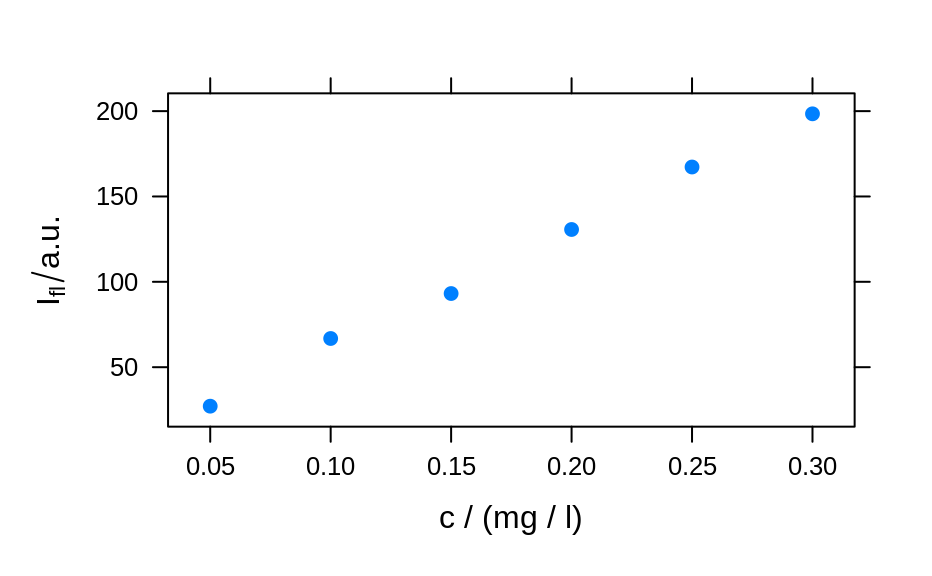
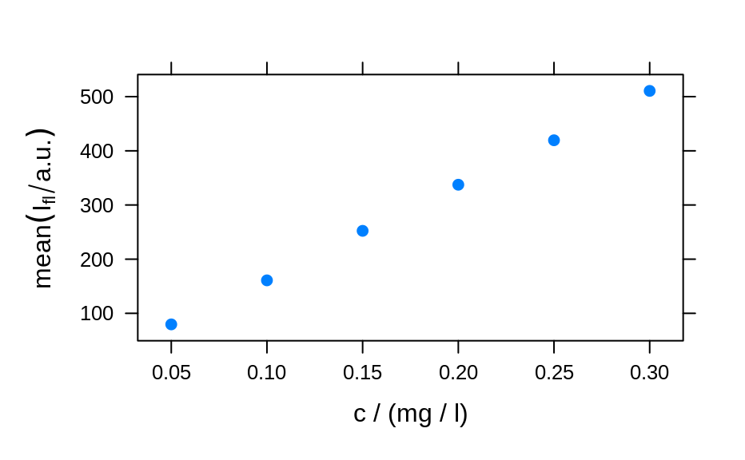
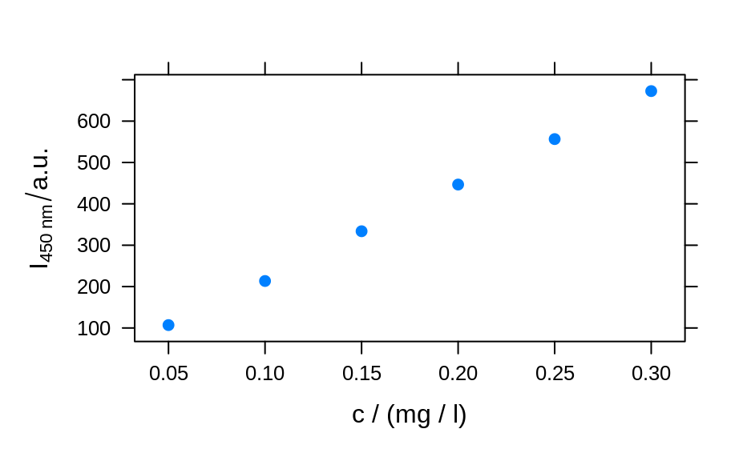
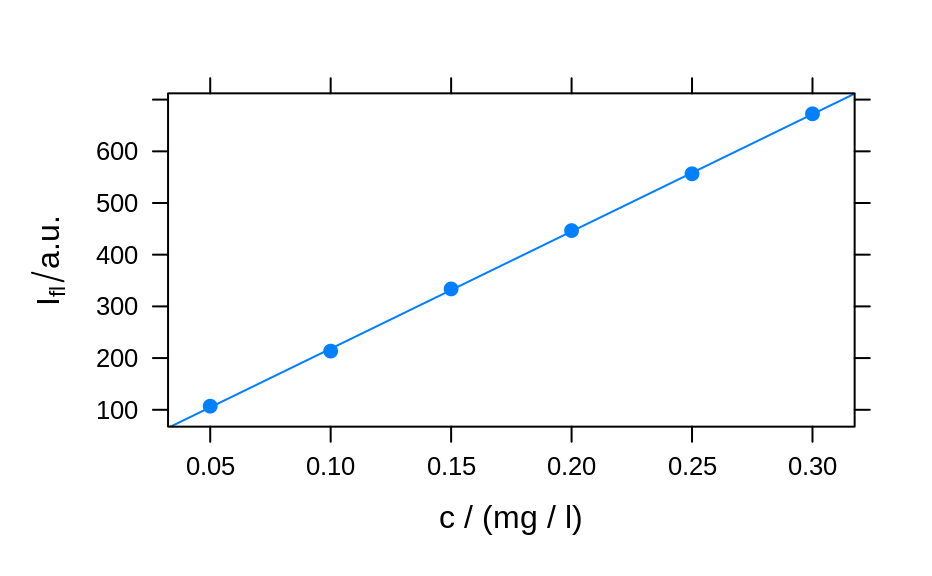
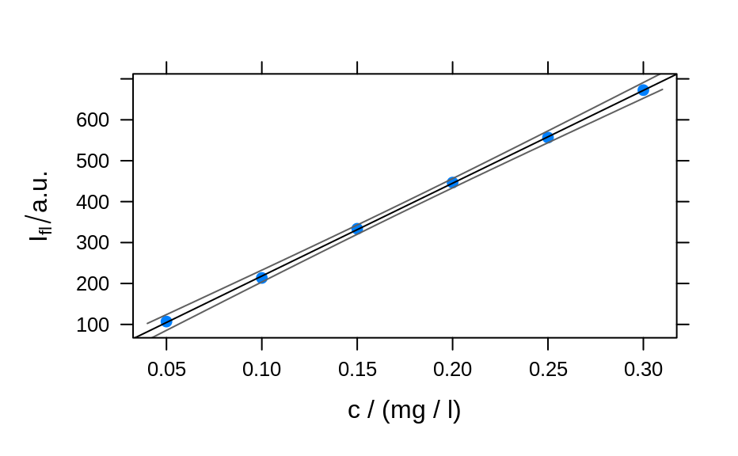
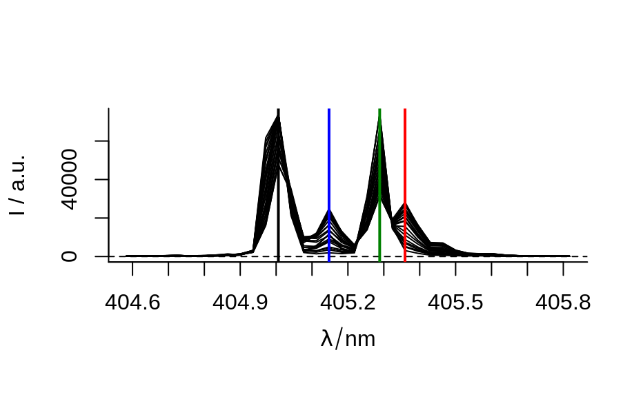

Calibration- and timeseries plots, depth-profiles and the like
plotc plots intensities of a hyperSpec object over another
dimension such as concentration, time, or a spatial coordinate.
plotc(
object,
model = spc ~ c,
groups = NULL,
func = NULL,
func.args = list(),
...
)the hyperSpec object
the lattice model specifying the plot
grouping variable, e.g. .wavelength if intensities of
more than one wavelength should be plotted
function to compute a summary value from the spectra to be plotted instead of single intensities
further arguments to func
further arguments to lattice::xyplot().
If func is not NULL, the summary characteristic is calculated
first by applying func with the respective arguments (in
func.args) to each of the spectra. If func returns more than
one value (for each spectrum), the different values end up as different
wavelengths.
If the wavelength is not used in the model specification nor in
groups, nor for specifying subsets, and neither is
func given, then only the first wavelength's intensities are plotted
and a warning is issued.
The special column names .rownames and .wavelength may be used.
The actual plotting is done by lattice::xyplot().
## example 1: calibration of fluorescence
plotc(flu) ## gives a warning
#> Warning: Intensity at first wavelengh only is used.

plotc(flu, func = mean)

plotc(flu, func = range, groups = .wavelength)
plotc(flu[, , 450], ylab = expression(I["450 nm"] / a.u.))

calibration <- lm(spc ~ c, data = flu[, , 450]$.)
summary(calibration)
#>
#> Call:
#> lm(formula = spc ~ c, data = flu[, , 450]$.)
#>
#> Residuals:
#> 1 2 3 4 5 6
#> 2.1918 -4.6846 2.1696 1.6005 -1.9306 0.6533
#>
#> Coefficients:
#> Estimate Std. Error t value Pr(>|t|)
#> (Intercept) -8.666 2.876 -3.013 0.0394 *
#> c 2268.482 14.769 153.596 1.08e-08 ***
#> ---
#> Signif. codes: 0 ‘***’ 0.001 ‘**’ 0.01 ‘*’ 0.05 ‘.’ 0.1 ‘ ’ 1
#>
#> Residual standard error: 3.089 on 4 degrees of freedom
#> Multiple R-squared: 0.9998, Adjusted R-squared: 0.9998
#> F-statistic: 2.359e+04 on 1 and 4 DF, p-value: 1.078e-08
#>
plotc(flu[, , 450], type = c("p", "r"))

conc <- list(c = seq(from = 0.04, to = 0.31, by = 0.01))
ci <- predict(calibration, newdata = conc, interval = "confidence", level = 0.999)
panel.ci <- function(x, y, ...,
conc, ci.lwr, ci.upr, ci.col = "#606060") {
panel.xyplot(x, y, ...)
panel.lmline(x, y, ...)
panel.lines(conc, ci.lwr, col = ci.col)
panel.lines(conc, ci.upr, col = ci.col)
}
plotc(flu[, , 450],
panel = panel.ci,
conc = conc$c, ci.lwr = ci[, 2], ci.upr = ci[, 3]
)

## example 2: time-trace of laser emission modes
cols <- c("black", "blue", "#008000", "red")
wl <- i2wl(laser, c(13, 17, 21, 23))
plot_spc(laser, axis.args = list(x = list(at = seq(404.5, 405.8, .1))))
for (i in seq_along(wl)) {
abline(v = wl[i], col = cols[i], lwd = 2)
}

plotc(laser[, , wl], spc ~ t,
groups = .wavelength, type = "b",
col = cols
)